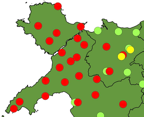

Sut allwch chi gymryd rhan...
Mae’r Gymraeg, fel pob iaith fyw arall, yn newid yn gyson. Dydy plant ddim yn siarad fel eu rhieni, er eu bod wedi dysgu’r iaith ganddynt. Sut mae patrymau ac ymadroddion newydd yn ymddangos ac yn lledu? Mae tafodieithoedd y Gymraeg yn rhan o’i chyfoeth, ond mae pobl heddiw yn fwy tebygol o glywed acenion o ochr arall y wlad nag oedden nhw ganrif yn ôl ac yn fwy tebygol o symud o un pen o Gymru i’r llall. Ydy gwahaniaethau mewn iaith yn diflannu yn sgîl hynny? Ydyn ni i gyd yn dechrau siarad yn fwy tebyg i’w gilydd? Mae pobl newydd yn dysgu’r iaith hefyd, y tu allan i’r ardaloedd traddodiadol. Ydy hynny’n effeithio ar yr iaith ac yn newid ei strwythur?
Dyna’r fath o gwestiwn ’dyn ni’n trio ei ateb drwy greu Atlas Cystrawen Tafodieithoedd y Gymraeg. I wneud hynny, ’dyn ni’n chwilio am bobl sy’n fodlon treulio 15 munud yn mynd drwy holiadur/cyfweliad. Nawn ni ofyn ychydig o gwestiynau cyffredinol (lle ydych chi wedi byw, beth ydych chi’n neud) ac wedyn yn gofyn i chi ailadrodd rhestr o frawddegau fel byddwch chi’n dweud nhw mewn iaith pob dydd, mewn ffordd naturiol. Does dim atebion cywir neu anghywir, a ’dyn ni ddim yn profi iaith neb.
I gael syniad o’r fath o beth allech chi ddisgwyl os ydych chi'n cytuno i wneud holiadur, cliciwch yma (dolen yn lawrlwytho ffeil sŵn MP3, 1.2MB).
I weld beth ydyn ni'n wneud gyda'r cyfweliadau a sut rydyn ni'n eu defnyddio i olrhain datblygiad yr iaith, cliciwch yma.
Os ydych chi’n fodlon cymryd rhan drwy wneud holiadur, neu drwy ofyn i bobl eraill gymryd rhan, neu mewn unrhyw ffordd arall, cysylltwch â David Willis.
Newyddion a gwybodaeth
- Cyfryngau
- Welsh Twitter: Capturing language change in real time
- Milton Keynes to Cardiff (via New Zealand)
- Berfau moddol a chytgord negyddol
- Y rhagenw ail unigol chdi
- Hepgor berfau cynorthwyol
Papurau â chysylltiad i'r prosiect